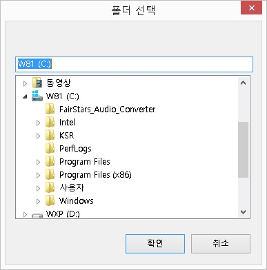

일반적으로 윈도우즈 탐색기에서 폴더나 파일을 복사/이동할 때에는 작업 대상 폴더나 파일을 클립보드에 복사/잘라내기 하고, 원하는 폴더로 이동한 뒤 붙여넣기를 하는 방식으로 작업을 진행합니다. 센스 독서기에서는 이러한 방식 외에도 폴더를 이동하지 않고 대상 폴더를 선택하여 복사/이동할 수 있는 기능을 제공합니다.

1. 폴더에 복사 기능
① 복사를 원하는 폴더나 파일에 위치하거나 여러 개인 경우 선택합니다.
② '폴더에 복사' 기능키인 <Alt-C>키를 누릅니다.
③ '폴더 선택' 대화상자가 나타나면 편집창에 경로를 직접 입력하거나 트리뷰에서 대상 폴더를 선택하고, '확인' 버튼을 누릅니다.
④ 복사 작업이 끝나면 독서기의 탐색창으로 다시 돌아옵니다.
2. 폴더로 이동 기능
① 이동을 원하는 폴더나 파일을 선택합니다.
② '폴더로 이동' 기능키인 <Alt-W>키를 누릅니다.
③ '폴더 선택' 대화상자의 편집창에 경로를 직접 입력하거나 트리뷰에서 폴더를 선택한 후, '확인' 버튼을 누릅니다.
④ 이동 이후 탐색창으로 돌아오며, 선택은 해제됩니다.
파일이나 폴더의 이름을 변경할 때에는 기능키를 누르거나 [편집] -> [이름 변경] 메뉴를 실행합니다.
편집창에 현재 파일이나 폴더 이름이 나타나면 원하는 이름으로 수정한 뒤 <Enter>키를 누릅니다.
통합 복사는 여러 개의 파일을 하나로 합쳐 새로운 파일을 만들어 내는 기능입니다.
다음의 과정에 따라 통합 복사를 실행합니다.
① 통합 복사할 파일을 선택합니다.
② 기능키나 [편집] -> [통합 복사] 메뉴를 실행합니다.
③ '파일 저장' 대화상자에서 저장될 파일의 위치와 이름을 지정합니다.
④ '확인' 버튼을 누르면 통합 복사가 실행됩니다.
* 파일이 합쳐지는 순서는 선택된 파일들이 탐색창 목록에 출력된 순서와 일치합니다. 따라서 정렬 순서를 변경하면 파일이 합쳐지는 순서도 같이 변경됩니다.
이 기능은 파일만을 대상으로 동작합니다.